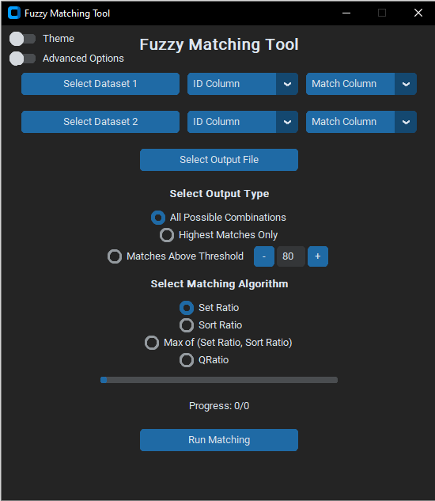
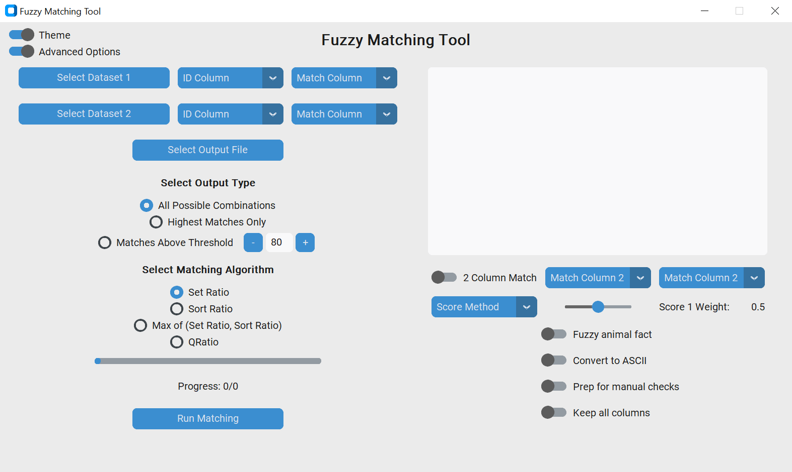

Fuzzy Matching Tool
A GUI-based tool for fuzzy string matching using RapidFuzz, developed using CustomTkinter. Taking as input two datasets of strings to match, this tool returns a cleaned dataset containing match scores according to the specified algorithm and output type.
Features
Data formats
Data is input as two datasets to match across, each containing at minimum a unique ID for each row and the corresponding string to be matched. Matching takes place across these datasets, and the result is export as a single dataset. The import and export filetypes currently supported are text (.csv), Excel (.xlsx) and Stata (.dta)
Output Types
The results can be calculated and output in three ways:
- All possible combinations: Reports match score for every possible combination of strings across input datasets. The output is grouped by dataset 1 ID.
- Highest matches only: Reports the best match in dataset 2 for each ID in dataset 1.
- Matches above threshold: Reports all match scores above the threshold set by the user. The output is grouped by ID in dataset 1.
Matching Algorithms
Set Ratio
Compares based on unique/common words, ignoring extra and repeated words.
In [1]: fuzz.token_set_ratio("I love competition economics", "competition economics")
Out[1]: 100Sort Ratio
Sorts words in strings before comparison.
In [2]: fuzz.token_sort_ratio("I love competition economics", "economics competition I love")
Out[2]: 100Max(Set Ratio, Sort Ratio)
Uses the higher score of Set Ratio and Sort Ratio.
In [1]: fuzz.token_set_ratio("I love competition economics", "competition economics")
Out[1]: 100
In [2]: fuzz.token_sort_ratio("I love competition economics", "competition economics")
Out[2]: 85.71428571428572
In [3]: fuzz.token_ratio("I love competition economics", "competition economics")
Out[3]: 100QRatio
Calculates the standard InDel similarity ratio, pre-processing strings for speed.
In [1]: fuzz.QRatio('I love competition economics', 'competition economics')
Out[1]: 85.71428571428572Additional Settings
Beyond the toggle for theme (selecting between light and dark mode), it is also possible to toggle the visibility of several additional features:- Debug window: Prints debug statements as the code runs to monitor progress; any errors are routed to this window.
- 2 Column Match: Switch to toggle matching on 2 columns seperately, then aggregating the score. The score can be aggregated using the maximum (OR), minimum (AND) or weighted average, with weight set by a slider.
- Fuzzy animal fact: Switch to enable/disable display of a fuzzy animal fact on completion!
- Prep for manual checks Switch to enable/disable the creation of columns helpful for manually verifying the matching output.
- Keep all columns: Switch to enable/disable including all columns from the input datasets in the output.
Preview
By default the window displays in dark theme with advanced options hidden, as below:

Toggling the advanced options toggle displays the additional settings, as below. Toggling theme switches the GUI from dark mode to light, and vice versa.
